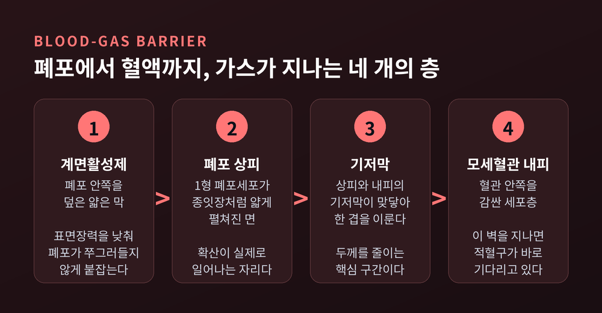
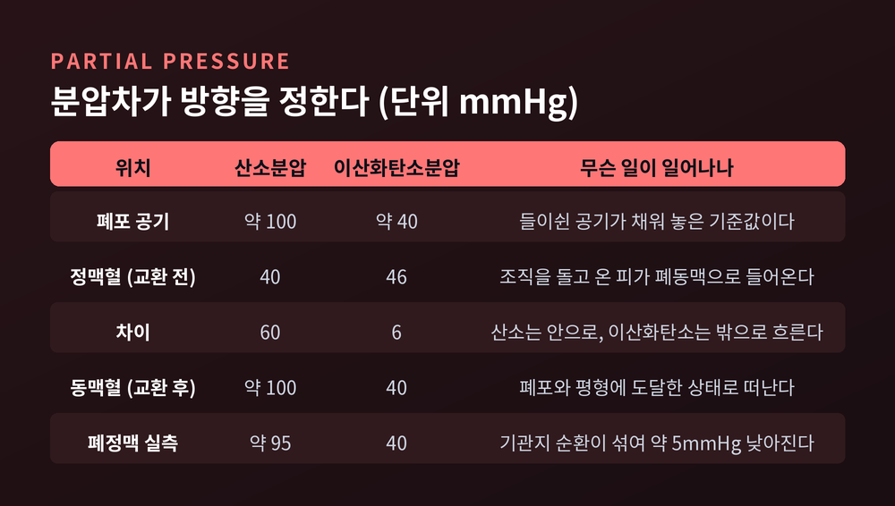
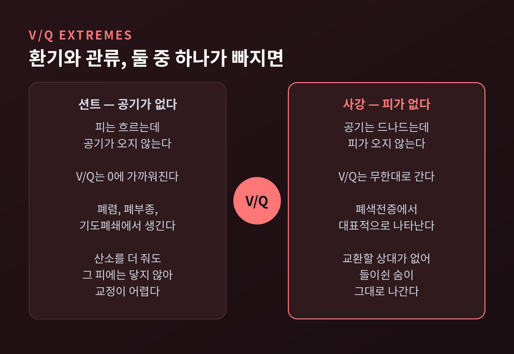
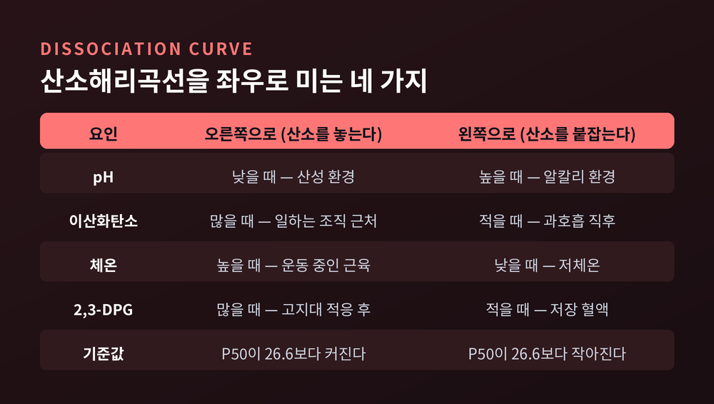
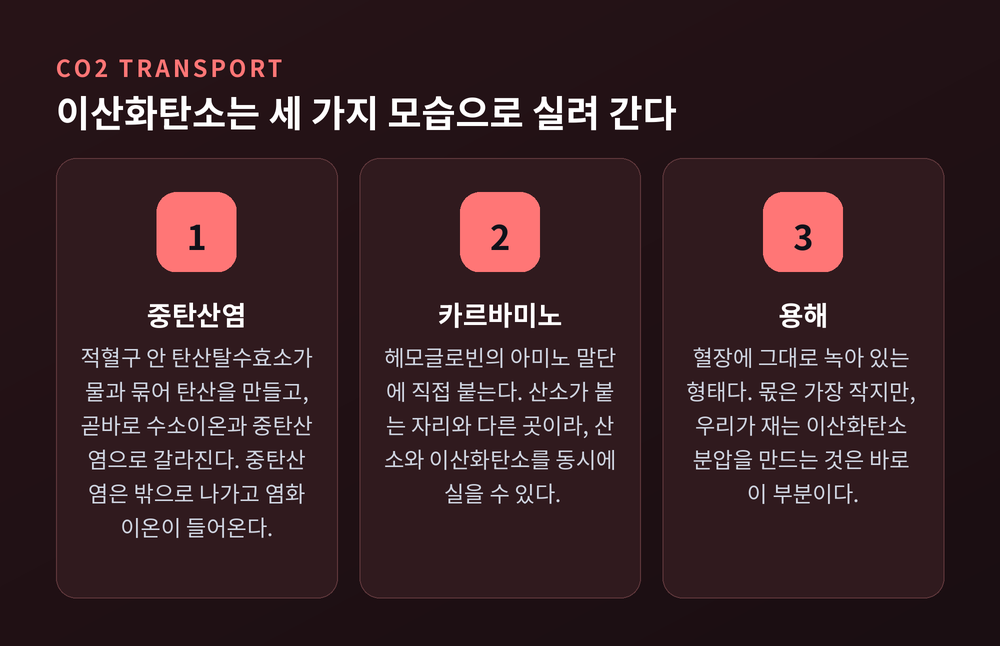
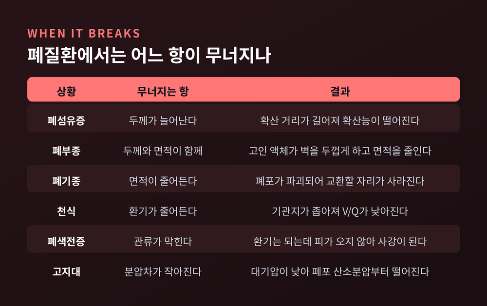

이번 글에서는 폐 가스교환의 원리를 정리해 보겠습니다.
숨을 들이쉬면 산소가 들어오고 이산화탄소가 나간다는 사실은 누구나 압니다.
그 사이에서 실제로 무슨 일이 벌어지는지, 구조와 수치를 따라가며 살펴보려 합니다.
폐는 나뭇가지처럼 갈라지는 기도의 덩어리입니다.
그런데 이 기도의 대부분은 가스교환에 참여하지 않습니다.
큰 기도와 대부분의 세기관지는 전도 구역이라 부릅니다. 공기를 배달만 하는 통로입니다.
실제 교환은 호흡 구역 — 호흡세기관지, 폐포관, 폐포낭, 그리고 폐포 — 에서만 일어납니다.
폐포는 대략 3억 개로 알려져 있습니다.
자료에 따라 3억에서 10억 개까지 편차가 있으니, 정확한 값이라기보다 규모의 감각으로 받아들이시면 좋겠습니다.
표면적도 마찬가지입니다. 흔히 약 70제곱미터로 인용되지만, 측정 기준에 따라 50에서 140제곱미터까지 벌어집니다.
폐포 벽을 이루는 세포는 세 종류입니다.
1형 폐포세포는 종잇장처럼 얇게 안쪽을 덮습니다. 확산이 실제로 일어나는 면입니다.
2형 폐포세포는 계면활성제를 분비해 표면장력을 낮춥니다. 폐포가 쭈그러들지 않게 붙잡아 주는 역할이지요.
폐포 대식세포는 먼지와 병원체를 처리합니다.
이웃한 폐포 사이에는 콘 구멍이라는 작은 통로가 뚫려 있습니다.
한쪽 기도가 막혀도 옆 폐포를 통해 공기가 돌아 들어올 수 있게 만든 우회로입니다.

산소 한 분자가 폐포 공기에서 적혈구까지 가려면 네 개의 층을 지나야 합니다.
계면활성제 층, 폐포 상피, 기저막, 그리고 모세혈관 내피입니다.
이 네 층을 다 합친 두께가 놀랍습니다.
혈액-가스 장벽에서 가장 얇은 부위는 평균 0.2에서 0.3마이크로미터입니다.
머리카락 굵기의 삼백분의 일 수준입니다.
다만 여기서 한 가지는 짚어야 하겠습니다.
자료마다 0.5마이크로미터, 0.6마이크로미터, 혹은 0.6에서 2마이크로미터로 다르게 적습니다.
얇은 쪽만 재느냐, 결합조직이 낀 두꺼운 쪽까지 포함하느냐에 따라 값이 달라지기 때문입니다.
한 호흡생리 전문 자료는 이 분야의 수치들이 1940년대 논문에서 시작해 교과서끼리 그대로 옮겨 적혀 왔다고 지적하기도 합니다.
그러니 "가장 얇은 곳은 1마이크로미터 안쪽"이라는 정도로 이해하시는 편이 정직합니다.
넓고 얇다는 것. 이 두 조건이 폐 설계의 핵심입니다.
가스는 펌프로 밀려 들어가지 않습니다. 그저 분압이 높은 쪽에서 낮은 쪽으로 흘러갈 뿐입니다.
폐포 공기의 산소분압은 약 100mmHg입니다.
폐동맥을 타고 온 정맥혈의 산소분압은 40mmHg입니다.
60mmHg의 차이가 생기고, 산소는 그 기울기를 따라 혈액으로 들어갑니다.
이산화탄소는 반대입니다.
정맥혈의 이산화탄소분압은 46mmHg, 폐포는 40mmHg입니다.
차이는 겨우 6mmHg입니다.
폐포 산소분압 100mmHg라는 값은 계산으로 나옵니다.
폐포 안 기체를 직접 뽑아낼 수 없기 때문에 폐포 기체 방정식을 씁니다.
해수면 대기압 760mmHg에서 체온의 수증기압 47mmHg를 빼고, 산소 비율 0.21을 곱합니다.
거기서 이산화탄소분압 40을 호흡지수 0.8로 나눈 값을 뺍니다.
결과는 99.7mmHg. 우리가 100mmHg라고 부르는 그 숫자입니다.
확산량을 결정하는 조건은 피크의 법칙으로 정리됩니다.
막의 표면적이 넓을수록, 분압차가 클수록, 가스의 용해도가 높을수록 확산은 늘어납니다.
반대로 막이 두꺼울수록 줄어듭니다.

여기서 자연스러운 의문이 하나 생깁니다.
산소는 60mmHg를 쓰는데 이산화탄소는 6mmHg뿐입니다. 그런데도 배출이 밀리지 않습니다. 어떻게 가능할까요.
답은 용해도에 있습니다.
이산화탄소는 체온 조건에서 산소보다 약 24배 잘 녹습니다.
그 덕분에 조직층을 통과하는 확산 속도가 산소의 약 20배에 이릅니다.
분자량만 보면 이산화탄소가 산소보다 1.375배 무겁습니다. 불리한 조건이지요.
그러나 용해도 차이가 이를 완전히 덮어 버립니다.
확산 속도는 용해도에 비례하고 분자량의 제곱근에 반비례한다는 그레이엄의 법칙이 이 결과를 설명합니다.
같은 벽, 같은 면적입니다. 통과하는 물질의 성질 하나가 십분의 일의 압력차를 상쇄한 셈입니다.
적혈구가 폐포 표면을 스치고 지나가는 시간은 약 0.75초입니다.
그런데 산소는 그중 0.25초 만에, 모세혈관 길이의 약 3분의 1 지점에서 이미 폐포와 평형에 도달합니다.
나머지 0.5초는 남는 시간입니다.
이 여유가 있기 때문에 산소 흡수는 관류 제한이라고 부릅니다.
얼마나 빨리 확산되느냐가 아니라, 얼마나 많은 피가 지나가느냐가 총량을 결정한다는 뜻입니다.
이 0.5초는 안전 마진이기도 합니다.
막이 조금 두꺼워져도, 안정 상태에서는 여전히 평형에 도달할 수 있습니다.
증상이 늦게 나타나는 이유가 여기에 있습니다.
반대 사례도 있습니다. 일산화탄소는 통과 시간이 끝날 때까지 평형에 이르지 못합니다.
이런 가스를 확산 제한 가스라고 부릅니다.
폐포에 공기가 들어와도 그 옆에 피가 흐르지 않으면 교환은 없습니다.
반대도 마찬가지입니다.
그래서 환기(V)와 관류(Q)의 비율, 곧 V/Q를 봅니다.
건강한 폐에서도 이 비율은 부위마다 다릅니다.
중력 때문입니다.
폐 바닥은 흉막강 액체의 무게에 눌려 흉막내압이 덜 음압입니다.
그래서 바닥의 폐포는 덜 팽창해 있고, 순응도가 높습니다. 들숨 때 더 크게 부풀지요.
결과적으로 환기는 바닥이 꼭대기보다 50퍼센트 많습니다.
그런데 혈류도 중력을 따라 바닥으로 몰립니다.
그리고 관류가 환기보다 더 큰 폭으로 늘어납니다.
그래서 V/Q는 바닥이 낮고 꼭대기가 높습니다.
수치로는 폐 중간부의 V/Q가 1이고, 바닥에서 꼭대기까지 0.3에서 2.1 사이에 분포합니다.
폐 전체 평균으로는 약 0.8이라는 값이 많이 쓰입니다.
두 숫자는 서로 다른 것을 재고 있습니다. 앞은 부위별 값, 뒤는 전체 평균입니다.
극단은 둘입니다.
피는 흐르는데 공기가 없으면 션트, V/Q는 0에 가까워집니다.
공기는 드나드는데 피가 없으면 사강, V/Q는 무한대로 갑니다.

몸에도 보정 장치가 있습니다.
환기가 나쁜 구역의 혈관을 스스로 좁혀 혈류를 다른 쪽으로 돌립니다. 저산소성 폐혈관 수축이라 부릅니다.
그럼에도 정상인의 폐에서조차 작은 손실은 남습니다.
기관지 순환의 혈액이 폐정맥으로 그대로 섞여 들어오기 때문입니다.
폐모세혈관 끝에서 100mmHg였던 산소분압이 폐정맥에서는 95mmHg로 떨어집니다.
이 차이를 재는 지표가 폐포-동맥 산소분압차입니다.
혈액 속 산소의 98퍼센트는 헤모글로빈에 붙어 이동합니다. 혈장에 그냥 녹아 있는 것은 2퍼센트뿐입니다.
헤모글로빈은 알파 두 개, 베타 두 개, 모두 네 개의 소단위로 이루어집니다.
각 소단위 중심의 2가 철이 산소 한 분자를 잡으니, 헤모글로빈 하나가 산소 네 분자를 나릅니다.
여기서 재미있는 일이 벌어집니다.
결합 전의 헤모글로빈은 T 상태로, 산소를 붙잡는 힘이 약합니다.
그런데 첫 산소가 붙는 순간 구조가 바뀌면서 나머지 자리들이 R 상태로 넘어갑니다.
두 번째, 세 번째, 네 번째 산소는 점점 더 쉽게 붙습니다.
이것을 양성 협동성이라고 합니다.
산소해리곡선이 직선이 아니라 S자를 그리는 이유가 바로 이 협동성입니다.
그리고 이 모양은 두 가지 이야기를 동시에 합니다.
곡선 위쪽의 평평한 구간은 폐에서의 사정입니다.
산소분압이 조금 떨어져도 포화도는 거의 내려가지 않습니다. 안전장치인 셈입니다.
곡선 아래쪽의 가파른 구간은 조직에서의 사정입니다.
작은 분압 저하만으로도 많은 산소가 풀려 나옵니다. 효율장치입니다.
절반이 포화되는 지점을 P50이라 부릅니다.
체온 37도, pH 7.40에서 정상 P50은 26.6mmHg입니다.
이 값이 커지면 곡선은 오른쪽으로, 작아지면 왼쪽으로 이동합니다.

pH가 떨어지고 이산화탄소가 늘면 헤모글로빈의 산소 친화도가 낮아집니다. 곡선이 오른쪽으로 움직입니다.
수소이온이 많아지면 헤모글로빈이 T 상태로 안정화되기 때문입니다.
이것이 보어 효과입니다.
의미를 풀어 보면 이렇습니다.
열심히 일하는 조직은 포도당과 산소를 태워 이산화탄소와 유기산을 만듭니다.
그 산성 환경 자체가 헤모글로빈에게 보내는 신호가 됩니다.
산소가 가장 필요한 자리에서 산소가 가장 잘 풀리는 구조입니다.
반대 방향의 장치도 있습니다.
폐에서 산소가 헤모글로빈에 붙으면 헤모글로빈은 조금 더 산성이 됩니다.
그러면 이산화탄소를 붙잡는 힘이 약해져 카르바미노 결합이 풀립니다.
동시에 내놓은 수소이온이 중탄산염과 만나 다시 이산화탄소가 됩니다.
이것이 홀데인 효과입니다.
같은 조건이라도 산소가 실린 동맥혈은 산소가 빠진 정맥혈보다 이산화탄소를 덜 싣습니다.
바꿔 말하면, 폐에서 산소를 싣는 행위 자체가 이산화탄소를 내리는 일을 돕습니다.
두 효과는 결국 하나의 현상을 양쪽에서 본 것입니다.
"조직에서는 이산화탄소가 산소를 밀어내고, 폐에서는 산소가 이산화탄소를 밀어냅니다."
이산화탄소의 운반 방식은 산소와 다릅니다. 세 가지 형태가 함께 쓰입니다.
첫째는 중탄산염입니다. 가장 큰 몫을 차지합니다.
둘째는 카르바미노 결합입니다. 헤모글로빈의 아미노 말단에 붙습니다.
여기서 중요한 점이 있습니다. 산소가 붙는 자리와 다른 자리라는 사실입니다.
그래서 산소와 이산화탄소가 같은 헤모글로빈에 동시에 실릴 수 있습니다.
셋째는 혈장에 그냥 녹아 있는 형태입니다.
비율은 자료마다 다릅니다.
어떤 자료는 80대 10대 10, 어떤 자료는 60대 30대 10, 전통적인 교과서는 70대 23대 7로 적습니다.
혈액이 담고 있는 총량을 기준으로 하느냐, 조직에서 싣고 폐에서 내리는 차이분을 기준으로 하느냐에 따라 달라집니다.
공통점은 하나입니다 — 중탄산염이 압도적으로 많다는 것.
조직에서 벌어지는 일을 따라가 보겠습니다.
세포가 만든 이산화탄소가 혈액으로 들어오면, 대부분은 적혈구 안으로 이동합니다.
그곳의 탄산탈수효소가 물과 결합시켜 탄산을 만들고, 탄산은 곧바로 수소이온과 중탄산염으로 갈라집니다.
수소이온은 헤모글로빈이 완충합니다. 이 순간이 곧 보어 효과의 출발점입니다.
중탄산염은 적혈구 밖으로 나가고, 대신 염화이온이 들어옵니다. 염화물 이동이라 부릅니다.
그래서 정맥혈은 중탄산염이 많고 염화이온이 적습니다.
폐에서는 이 모든 과정이 정확히 반대로 돕니다.
교환체와 효소가 방향을 바꾸고, 중탄산염이 다시 이산화탄소가 되어 폐포로 빠져나갑니다.

높은 곳에 가면 공기 중 산소 비율이 줄어든다고 오해하기 쉽습니다.
산소 비율은 21퍼센트로 그대로입니다. 달라지는 것은 대기압입니다.
대기압이 떨어지면 흡입 산소분압도 함께 떨어집니다.
고도 3,000미터 부근에서 약 110mmHg, 5,500미터에서 약 80mmHg, 에베레스트 정상 부근에서는 약 53mmHg까지 내려갑니다.
실제로 측정한 기록도 있습니다.
2008년 영국 연구진이 에베레스트에서 등반가 열 명의 동맥혈을 직접 채취했습니다.
고도 8,400미터, 대기압 272mmHg에서 주변 공기를 호흡한 네 검체의 평균 동맥혈 산소분압은 24.6mmHg였습니다.
해수면 정상치가 약 100mmHg인 점을 생각하면 사분의 일 수준입니다.
이산화탄소분압은 해수면 36.6에서 5,300미터 20.4, 6,400미터 18.2, 7,100미터 16.7mmHg로 계속 떨어졌습니다. 과호흡의 흔적입니다.
순응 과정도 흥미롭습니다. 두 단계로 나뉩니다.
처음에는 과호흡으로 이산화탄소가 빠지고 혈액이 알칼리 쪽으로 기웁니다. 곡선은 왼쪽으로 이동합니다.
그런데 이 알칼리 환경이 적혈구의 2,3-DPG 생성을 늘립니다.
그러면 곡선은 다시 오른쪽으로 밀려, 조직에서의 산소 하역이 개선됩니다.
처음엔 붙잡는 쪽으로, 나중엔 놓는 쪽으로 — 몸이 스스로 균형점을 옮기는 셈입니다.
다만 어느 방향이 더 이로운지는 고도와 시기에 따라 다릅니다.
극고도에서는 오히려 왼쪽 이동이 유리하다는 견해도 있습니다. 아직 정리가 끝난 문제는 아닙니다.
피크의 법칙의 네 변수를 기억하면 정리가 쉬워집니다. 면적, 두께, 분압차, 용해도입니다.
질환은 대개 이 중 하나를 건드립니다.
두께가 늘어나는 쪽이 있습니다.
폐섬유증은 조직이 두꺼워져 폐포벽이 두꺼워집니다.
폐부종은 고인 액체가 벽의 유효 두께를 늘리고 교환 면적까지 줄입니다.
폐부종에서 저산소가 이산화탄소 축적보다 먼저 두드러지는 이유는 앞서 본 용해도 때문입니다. 이산화탄소는 액체를 더 쉽게 건너갑니다.
면적이 줄어드는 쪽도 있습니다.
폐기종은 폐포 자체가 파괴되어 교환할 면적이 사라집니다.
안정 시에는 버티다가 운동 중에 문제가 드러나기도 합니다.
심박수가 올라가면 혈액이 폐포 모세혈관에 머무는 시간이 짧아지고, 앞서 말한 0.5초의 여유가 사라지기 때문입니다.
환기와 관류가 어긋나는 쪽도 있습니다.
천식은 기관지가 좁아져 환기가 줄어듭니다.
폐색전증은 반대로 혈류가 막혀, 공기는 드나드는데 피가 없는 폐포가 생깁니다.

임상에서 확산 능력을 볼 때는 일산화탄소를 씁니다.
일산화탄소는 헤모글로빈에 워낙 잘 붙어 혈중 분압이 거의 0에 가깝습니다. 계산이 단순해지는 것이지요.
낮은 농도의 일산화탄소를 10초간 호흡하며 측정하고, 정상값은 약 25mL/min/mmHg입니다.
이 값은 결국 폐포의 면적과 두께를 대신 말해 줍니다.
여기서 한 가지만 분명히 해 두겠습니다.
이 글은 원리를 이해하기 위한 교양 수준의 정리입니다.
호흡곤란이나 지속되는 기침처럼 신경 쓰이는 증상이 있으시다면, 스스로 판단하지 마시고 호흡기내과 전문의와 상담하시길 권합니다.
정리하면 이렇습니다.
폐 가스교환은 특별한 장치가 아니라, 아주 넓고 아주 얇은 벽 하나와 분압차만으로 굴러갑니다.
그 위에 헤모글로빈의 S자 곡선, 보어와 홀데인이라는 두 장치, 그리고 세 가지 이산화탄소 운반 형태가 얹혀 효율을 끌어올립니다.
숫자에 완전한 합의가 있는 것은 아닙니다.
막 두께도, 표면적도, 이산화탄소 운반 비율도 자료마다 다릅니다.
그래도 골격은 흔들리지 않습니다 — 넓게, 얇게, 그리고 기울기를 따라.
지금 이 문장을 읽는 동안에도 여러분의 폐에서는 같은 일이 반복되고 있습니다.
0.25초면 충분한 일입니다.
숨 한 번이 그렇게 사소한 일이냐고 물으신다면, 저는 아니라고 답하겠습니다.